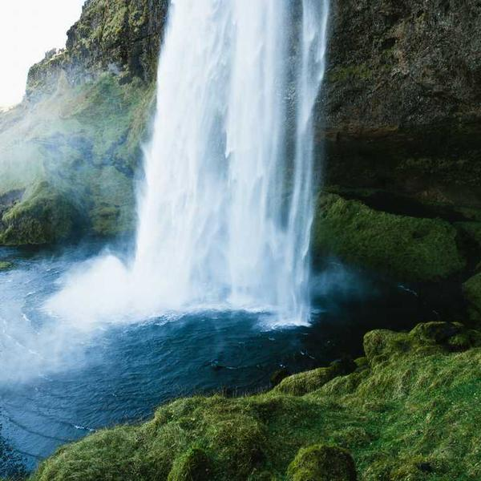

This was from a fabulous trip to the cost of Greenland with my family. The water was lovely- but very cold!


This was from a fabulous trip to the cost of Greenland with my family. The water was lovely- but very cold!

A picture of the Golden Gate Bridge. New York! New York!

Another great photo from Greenland. It's a river valley where a glacier used to be.

The waterfall made such a lovely sound. I could have fallen asleep!